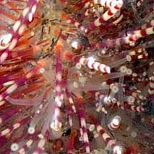
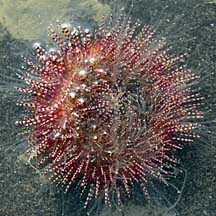

|
|
| echinoids text index | photo index |
| Phylum Echinodermata > Class Echinodea > sea urchins > Genera Salmacis |
| Two-toned
salmacis urchin Salmacis bicolor Family Temnopleuridae updated Apr 2020 Where seen? This spicy-looking red sea urchin was seen once along an East Coast Park shore that has since been affected by coastal works. Features: The one we saw had a body diameter 5-8cm, yellowish. Spines (1.5-2cm) longer than the more common White sea urchin, and banded white and red. Spines on the upper side are sharp. Spines on the underside have spade-like tips. It has long tube feet. |
 East Coast Park, May 09 |
 Long banded spines: |
 Close up of spines and tube feet. |
|
 Underside. |
 Mouth on underside. |
| Two-toned salmacis urchins on Singapore shores |
On wildsingapore
flickr
|
|
Acknowlegment
|